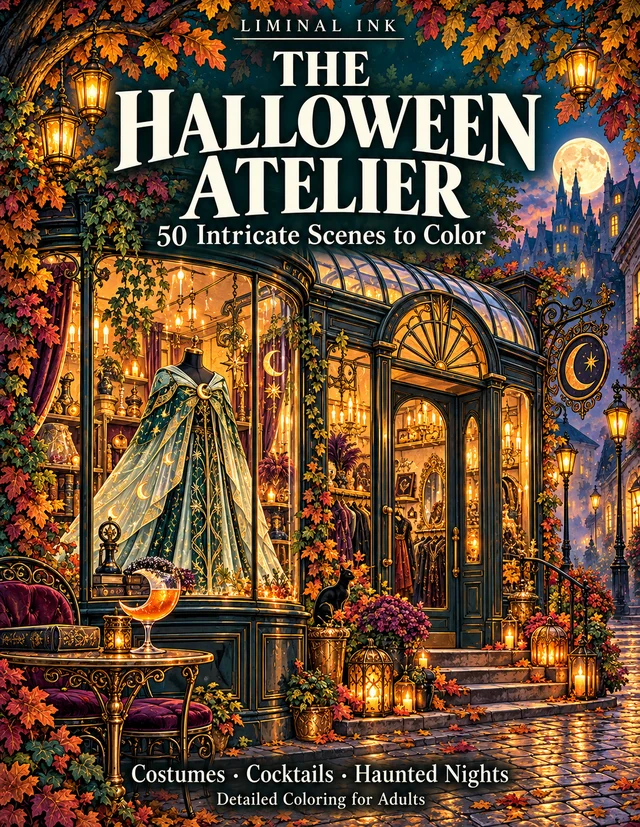
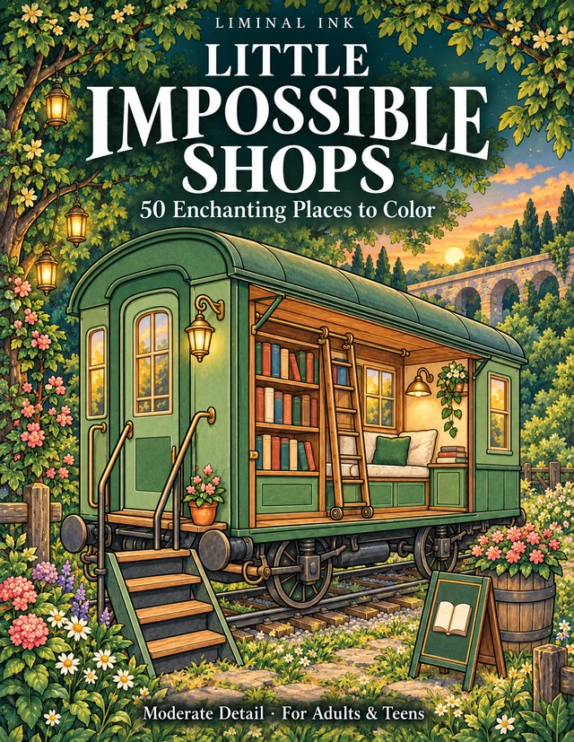
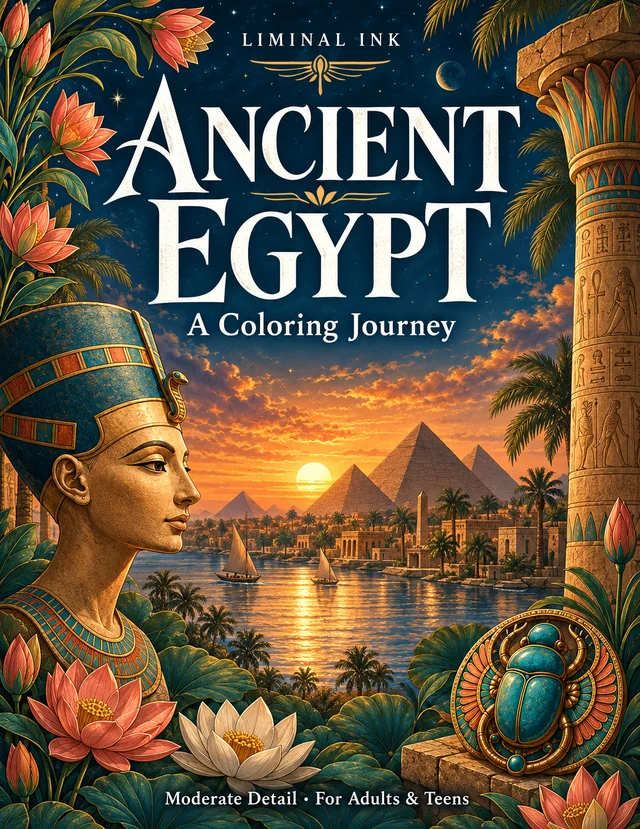
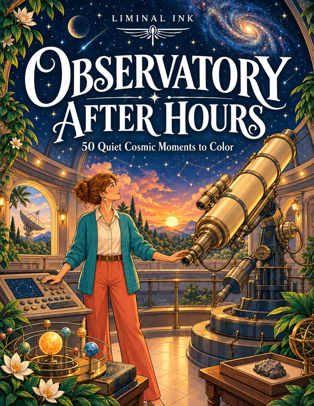
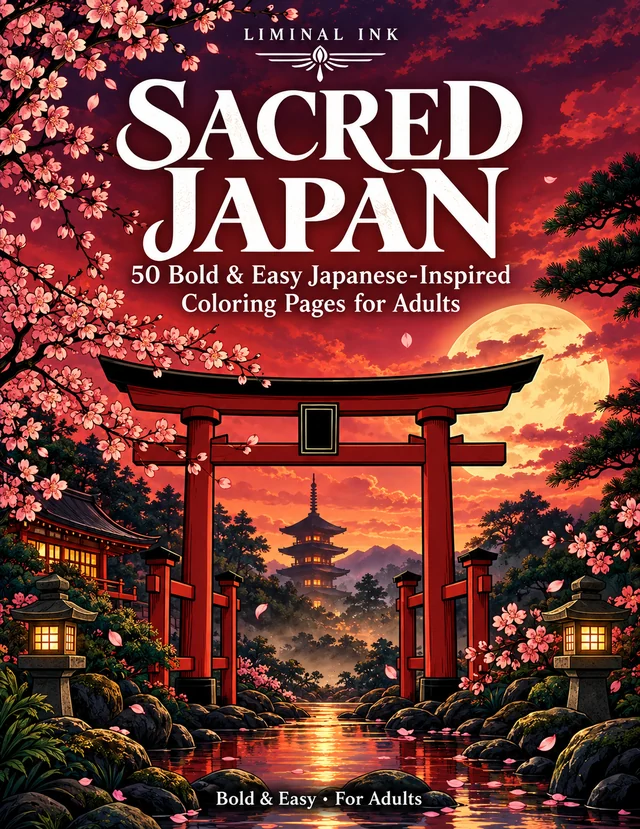
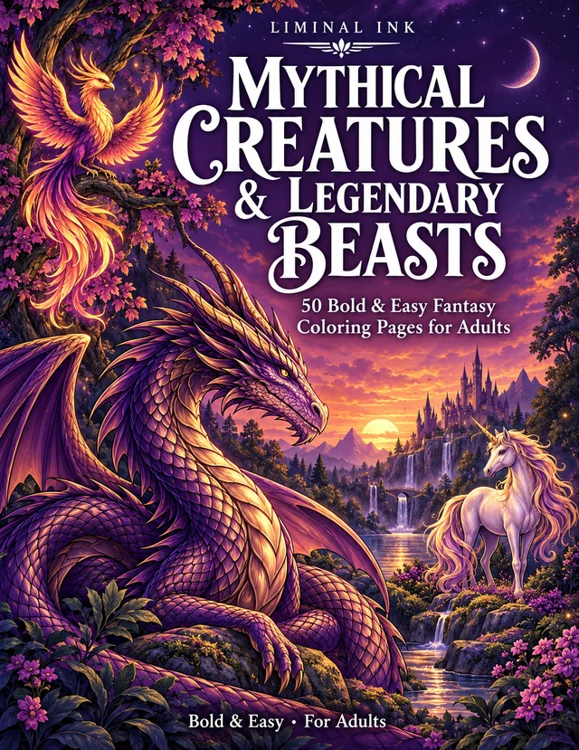
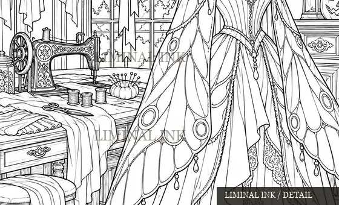
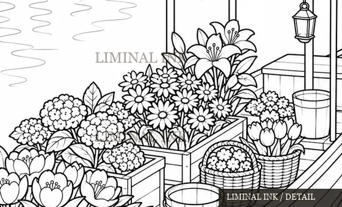

The Halloween Atelier
Costume ateliers, curious cocktails and richly detailed Halloween settings.
Explore the book on Amazon ↗Coloring books · In English
Wander into a costume atelier, a floating flower shop or a room beneath the stars. Choose a world. Make it yours.
Choose the level of detail that feels right for you.

The seasonal collection / OctoberThe collection
Intricate pages for a longer coloring session. Bolder, simpler collections for a lighter one. See the style before you choose.
Costume ateliers, curious cocktails and richly detailed Halloween settings.
Explore the book on Amazon ↗
Scene collection · 50 drawingsWhimsical storefronts, floating markets and places with a story to tell.
Explore the book on Amazon ↗
Intricate scenes · 50 drawingsAncient places, objects and craftsmanship, explored through detailed scenes.
Explore the book on Amazon ↗
Scene collection · 50 drawingsQuiet cosmic moments, telescopes and rooms made for looking up.
Explore the book on Amazon ↗
Bold & Easy · 50 drawingsJapanese-inspired scenes and objects from the Bold & Easy collection.
Explore the book on Amazon ↗
Bold & Easy · 50 drawingsA Bold & Easy collection of creatures, wings, scales and legends.
Explore the book on Amazon ↗A closer look
A glimpse of two drawings. These are cropped, watermarked previews rather than downloadable coloring pages.


Good to know
No. The collection labels distinguish intricate scenes, scene collections and the published Bold & Easy titles. The preview and the exact book description help you choose.
The books shown here are physical paperbacks sold on Amazon. This website does not sell or provide downloadable interiors.
Open the book's Amazon page to see its current cover, description and available product previews. Availability and pricing depend on your marketplace.